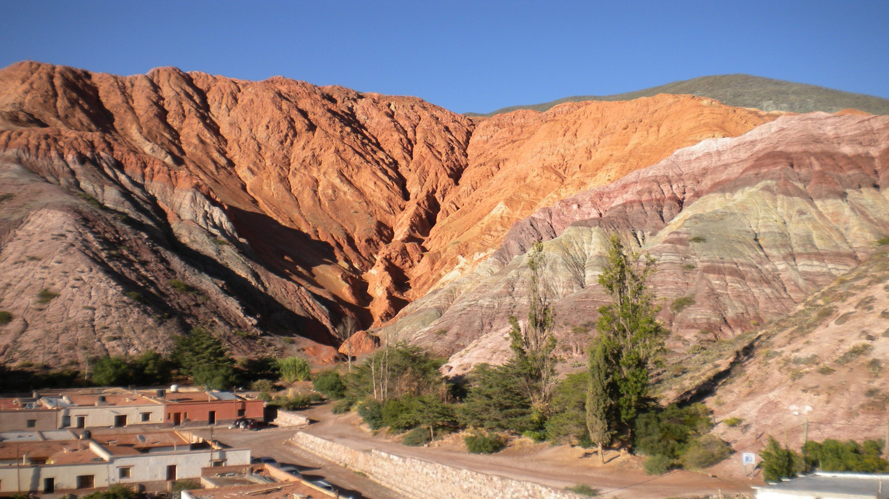

ANDRÉS
SOBRE MÍ
Soy Ingeniero Civil recibido de la UBA, con el objetivo de introducirme en el mundo de la programación. Tengo conocimiento y experiencia en Python, Django, Javascript, Jinja, Bootstrap , MySQL, HTML5 y GIT. Desarrolle una aplicación de uso personal para controlar el consumo de luz. Utilizé el módulo tkinter de Python y las librerías de matplotlib, numpy, squilite entre otras. Se puede acceder al repositorio con el siguiente enlace.
También desarrollé una aplicación web sencilla para poder registrar distintas tareas pendientes a realizar, destacar las tareas importantes e indicar las tareas finalizadas. Durante el desarrollo de la aplicación utilicé:
Actualmente estoy desarrollando otra aplicación más compleja para registrar los ahorros y gastos mensuales. Como el proyecto anterior, utilizo el módulo tkinter y las librerías datetime, sqlite y requests. Se puede acceder al código en el siguiente enlace.
Aparte de la programación, me encanta recorrer mi bella Argentina y disfrutar de la naturaleza. Te invito a conocerla.
GALERÍA

Cerro de los siete colores
Cataratas del Iguazu
Perito Moreno
Lago Traful